Excepciones¶
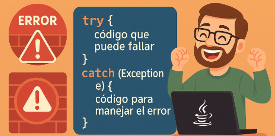
Introducción¶
En el proceso de ejecución de un programa, pueden surgir errores que como programadores pueden ser difíciles de controlar. Por ejemplo
- Tenemos que leer un fichero y este no existe
- El usuario tiene que introducir un número e introduce un texto
- Hacemos una petición a una base de datos y no contesta...
- ...
Por ejemplo, las siguientes muestras de código provocan la parada del programa
int[] numeros={1,2,3,4};
//provocará un error porque nos salimos tamaño del array
System.out.println(numeros[6]);// java.lang.ArrayIndexOutOfBoundsException
String s="Hola";
//provocará un error al convertir el string a entero
int numero=Integer.parseInt(s);//java.base/java.lang.NumberFormatException
//provocará error al dividir por cero
int resultado=12/0;//java.lang.ArithmeticException: / by zero
int[] lista;
//provocará error nullPointerException, el objeto no existe
int size= lista.length
Los programas tienes que ser robustos y recuperarse ante errores. Para manejar los errores y que los programas no se queden “colgados” y sigan su funcionamiento tenemos el manejo de excepciones.
Si el error no se trata, el manejador de excepciones realiza lo siguiente:
- Muestra la descripción de la excepción.
- Muestra la traza de la pila de llamadas.
- Provoca el final del programa
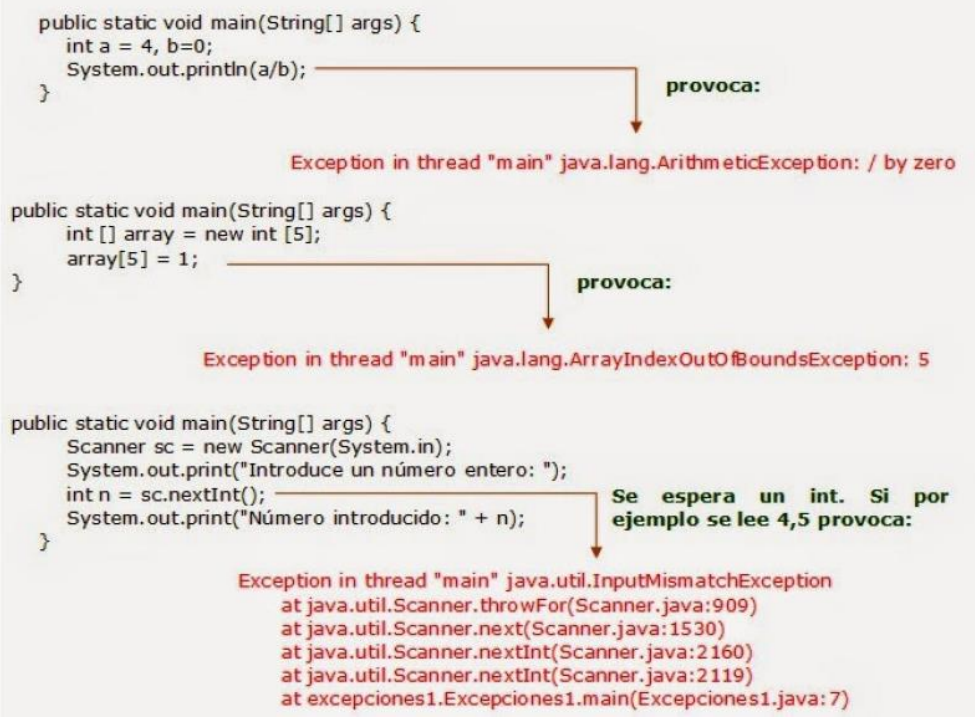
Excepción¶
Las excepciones son un mecanismo especial para gestionar errores. Permiten separar el tratamiento de errores del código normal de un programa.
Una excepción es un evento que ocurre durante la ejecución de una aplicación e interrumpe el flujo normal de las instrucciones del programa.

Class Exception y class Error extienden Throwable.
La clase Error está relacionada con errores de la máquina virtual de Java. Generalmente estos
errores no dependen del programador, por lo que no nos debemos preocupar por tratarlos, por
ejemplo, OutOfMemoryError, StackOverflowError, errores de hardware, etc.
En la clase Exception se encuentran las excepciones que se pueden lanzar en una aplicación
Las excepciones son diferentes de los errores porque se pueden escribir programas para recuperarse de excepciones, pero no se pueden escribir programas para recuperarse de errores.
Las excepciones pueden ser detectadas por una parte del programa que intenta recuperarse del problema.
Qué ocurre cuando se produce una excepción¶
- La Máquina Virtual Java crea un objeto excepción y lo lanza. El objeto excepción creado contiene información sobre el error. La ejecución normal del programa se detiene.
- El sistema busca en el método donde se ha producido la excepción un manejador de excepciones que capture(catch) ese objeto y trate la excepción.
-
Si el método no contiene un manejador para la excepción se busca en el método que llamó a este y así sucesivamente en toda la pila de llamadas.
-
Cuando se encuentra un manejador apropiado se le pasa la excepción. Un manejador de excepciones es considerado apropiado si el tipo de objeto excepción lanzado es compatible al tipo que puede manejar.
- Si no se encuentra un manejador adecuado la Máquina Virtual Java muestra el error y acaba el programa. Por ejemplo, si tenemos un programa que tiene una serie de llamadas a métodos para hacer una división y finalmente el usuario introduce un 0 en el denominador
public class ExcepPiladellamadas {
static void incluirNumerador(){
Scanner sc = new Scanner(System.in);
System.out.print("Indica el numerador: ");
int num = sc.nextInt();
incluirDenominador(num);
}
static void incluirDenominador(int n){
Scanner sc = new Scanner(System.in);
System.out.print("Indica el denominador: ");
int den = sc.nextInt();//si se introduce un 0
realizarDivisión(n, den);
}
static void realizarDivisión(int n, int d){
System.out.println("La división es: " + n/d);
}
public static void main(String[] args) {
incluirNumerador();
}
}
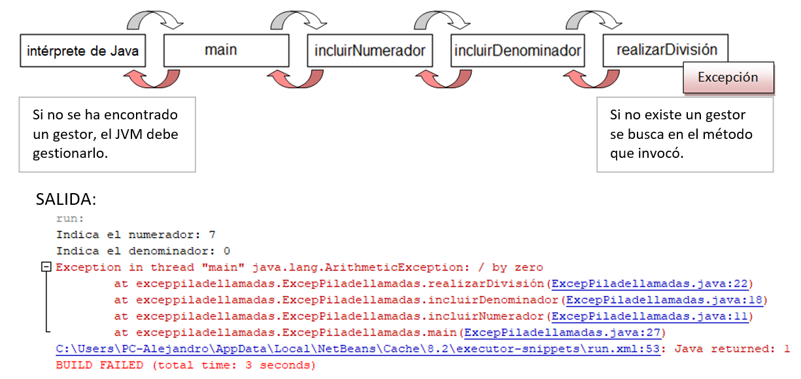
Jerarquía de Excepciones¶
En la clase Exception se encuentran las excepciones que se pueden lanzar en una aplicación. Tiene
varias subclases, entre ellas:
- RuntimeException: son excepciones lanzadas durante la ejecución del programa. Por ejemplo: ArithmeticException, NullPointerException, ArrayIndexOutOfBoundsException, etc. y pertenecen al paquete java.lang.
- IOException: son excepciones lanzadas al ejecutar una operación de entrada-salida. Pertenecen al paquete java.io.
- ClassNotFoundException: excepción lanzada cuando una aplicación intenta cargar una clase, pero no se encuentra el fichero .class correspondiente.
Podemos ver un resumen
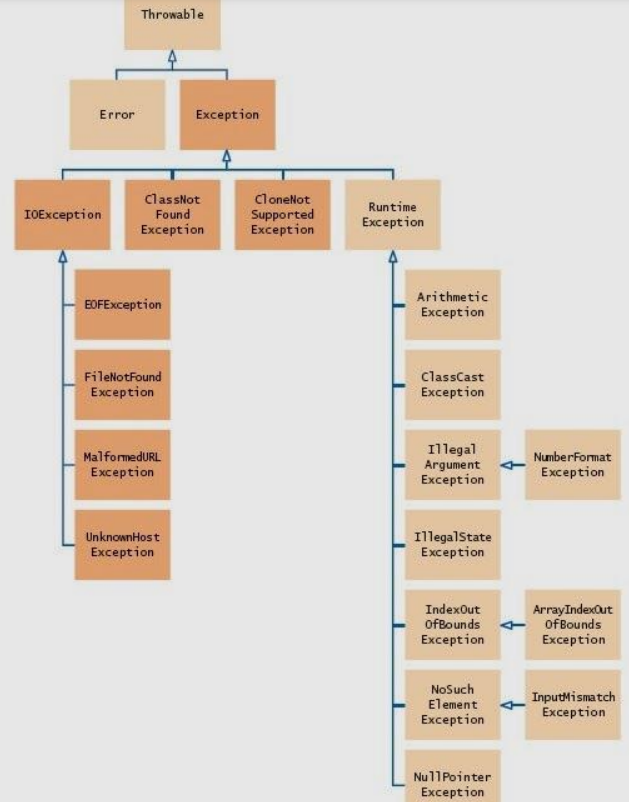
Tratamiento de excepciones¶
Un programa que trate una excepción, tiene un bloque del tipo try/catch
try {
//Instrucciones que se intentan ejecutar, si se produce una
//situación inesperada se lanza una excepción
}
catch(tipoExcepcion e){
//Instrucciones para tratar esta excepción
}
catch(otroTipoExcepcion e){
//Instrucciones para tratar esta excepción
}
//Se pueden escribir tantos bloques catch como sean necesarios
finally{//opcional
//instrucciones que se ejecutarán siempre después de un bloque try,
//se haya producido o no una excepción
}
Bloque try: dentro del bloque try se coloca el código que podría generar una excepción.
Bloques catch: capturan y tratan una excepción cuando esta ocurre. Pueden existir varios bloques catch. Estos se definen directamente después del bloque try. Ningún código puede estar entre el final del bloque try y el comienzo del primer bloque catch. Los catch se evalúan por orden, si un catch atrapa la excepción que ha ocurrido, se ejecuta y los demás no.
Bloque finallly: es opcional e incluye código que se ejecuta siempre, independientemente si se ha producido una excepción o no
Ejemplos¶
El siguiente programa lee un número entero y lo muestra. Si en la instrucción sc.nextInt() se
introduce un número de otro tipo o un carácter, se lanza una excepción InputMismatchException
que es capturada por el bloque catch. En este bloque se realizan las instrucciones necesarias para
resolver la situación y que el programa pueda continuar.
public static void main(String[] args) {
Scanner sc = new Scanner(System.in);
int n=0;
boolean esCorrecto=false;
do{
try{
System.out.println("Introduce un número entero ");
n = sc.nextInt();//si no introduce un entero salta la excepción
esCorrecto=true;
}
catch(InputMismatchException e){
sc.nextLine();//vacia el buffer
System.out.println("Debe introducir un número entero "
+ e.toString());
}
}while(!esCorrecto);
System.out.println("Número introducido: " + n);
}
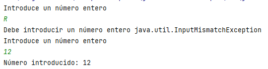
El siguiente ejemplo captura dos excepciones, por un lado se espera la entrada de dos enteros y por otro que el segundo no sea cero
public static void main(String[] args) {
Scanner sc = new Scanner(System.in);
int dividendo=0,dividor=0;
boolean esCorrecto=false;
do{
try{
//produce error si no se introduce un entero
System.out.print("Introduce dividendo: ");
dividendo = sc.nextInt();
System.out.println();
System.out.print("Introduce divisor: ");
dividor = sc.nextInt();
//produce un error si dividor es 0
System.out.println(dividendo/dividor);
//no se produce excepción y salimos
esCorrecto=true;
}
catch (InputMismatchException e){
System.out.println("Error: hay que introducir un entero");
}
catch (ArithmeticException e){
System.out.println("Error: no se puede dividir por 0");
}
finally {
//siempre vaciamos el buffer
sc.nextLine();
}
}while(!esCorrecto);
}
Importante
Cuando se lanza una excepción se captura por el primer bloque catch cuyo parámetro sea de la misma clase que el objeto excepción o de una clase base directa o indirecta. Por este motivo, es importante el orden en que se coloquen los bloques catch.
Las excepciones más genéricas se deben capturar al final.
Si no es necesario tratar excepciones
concretas de forma específica, se puede poner un bloque catch de una clase base que las capture
todas y las trate de forma general. Esto se conoce como captura genérica de excepciones.
En el siguiente ejemplo, en el último catch, se captura cualquier posible error que surja
public static void main(String[] args) {
Scanner sc = new Scanner(System.in);
int [] array = {4,2,6,7};
int n;
boolean esCorrecto = false;
do{
try{
System.out.println("Introduce un número entero > 0 y < " +
array.length +
" ");
n = sc.nextInt();
System.out.println("Valor en la posición " + n + ": " +
array[n]);
esCorrecto = true;
}
catch(InputMismatchException e){
sc.nextLine();
n = 0;
System.out.println("Debe introducir un número entero ");
}
catch(IndexOutOfBoundsException e){
System.out.println("Debe introducir un número entero > 0 y <" + array.length + " ");
}
// resto de excepciones de tipo Exception y derivadas
catch(Exception e){
System.out.println("Error inesperado " + e.toString());
}
finally {
sc.nextLine();//limpiamos buffer siempre
}
}while(!esCorrecto);
}
}
Tipo de exepciones¶
En Java, hay dos tipos de excepciones:
- Checked exceptions (Excepciones verificadas).
- Unchecked exceptions (Excepciones no verificadas).
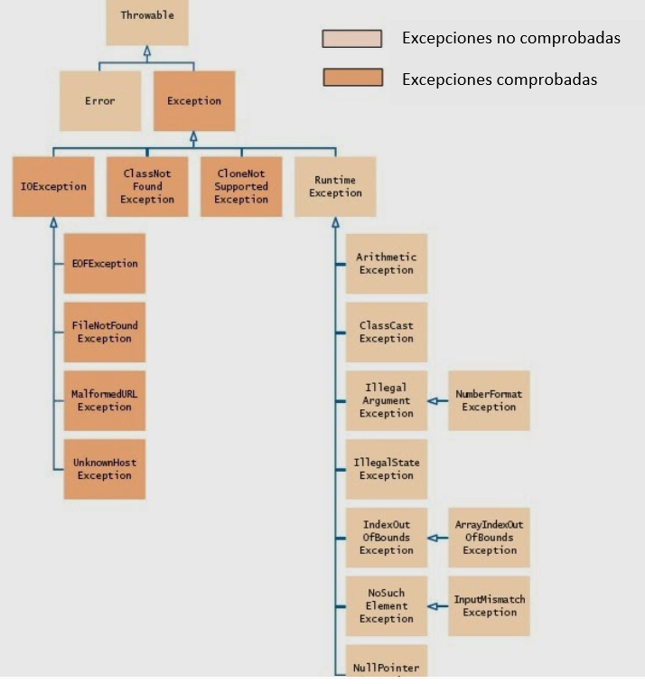
Checked exceptions¶
Estas son las excepciones que se comprueban en tiempo de compilación, es decir, un método debe hacer algo al respecto sino el programa no compila. El programador está obligado a tratarla.
El programador está obligado a tratar, en otro caso, el programa no compila. Son ejemplo de este tipo:
- cuando accedemos a ficheros
- base de datos
- acceso a la red
El siguiente ejemplo en el que queremos abrir un fichero no compila, ya que, no tratamos la excepción.
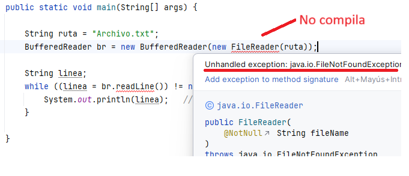
Si algún código dentro de un método arroja una excepción verificada, entonces el método puede una de las dos posibilidades:
- Manejar la excepción en un bloque
try-catch{}
public static void leerFichero(String ruta) {
try {
BufferedReader br = new BufferedReader(new FileReader(ruta));
String linea;
while ((linea = br.readLine()) != null) {
System.out.println(linea);
}
} catch (IOException e) {
System.out.println("Error al acceder al archivo: " + e.getMessage());
}
}
throws(lanzar) la excepción al que invoca el método.
//la excepción debe tratarla quien use el método
public static void leerFichero(String ruta) throws IOException {
BufferedReader br = new BufferedReader(new FileReader(ruta));
String linea;
while ((linea = br.readLine()) != null) {
System.out.println(linea);
}
}
En el ejemplo, IOException es una checked exception. Este método lanza una IOException cuando hay un problema de lectura.
La palabra reservada throws dice que este método no captura la excepción IOException con un catch, sino que cuando ocurra una, se lanzará al método que llama el método leerFichero.
Quien use el método y no trate la excepción no compila.
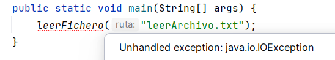
El código tendría que ser el siguiente.
public static void main(String[] args) {
try {
leerFichero("Archivo.txt");
} catch (IOException e) {
System.err.println("Error de entrada/salida (IOException): " + e.getMessage());
}
}
Unchecked exceptions¶
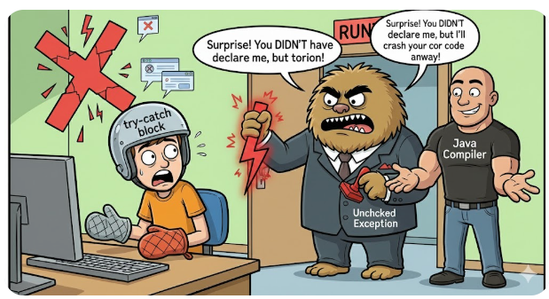
Ocurren en tiempo de compilación, es decir, no se verifican por el compilador. En Java, las excepciones en las clases RunTimeException y Error y sus subclases son unchecked exceptions todo lo demás es checked.
Depende de los programadores especificar o detectar las excepciones unchecked. Por ejemplo, imagina que tenemos el siguiente programa Java se compila sin erorres:
public static void main(String[] args) {
int y = 10;
int x = 0;
int z = y / x;
}
El compilador nos deja compilar la aplicación porque ArithmeticException es una excepción no verificada, pero al ejecutar el programa se lanza la excepción, por tanto, nosotros tendremos que darnos cuenta y controlar este tipo de excepciones.
Podemos crear el bloque try-catch para que no tenga errores, pero no es obligatorio
try{
int y = 10;
int x = 0;
int z = y / x;
}catch (ArithmeticException e){
System.out.println("No se puede dividir por 0");
}
Diferencias entre checked y unchecked exceptions¶
- Una checked exception se debe tratar siempre, mientras que una unchecked exception no.
- Una checked exception debe manejarse o bien con volviéndola a lanzar con un
throwo con un bloquetry catch, mientras que una unchecked exception no requiere ser manejada.

Throwable¶
Throwable es la superclase de todas las excepciones y errores. Se podria capturar en un bloque try-catch, ¡pero nunca se debe hacer!, ya que, no solo capturará todas las excepciones; sino que también hará lo mismo con todos los errores que genere la aplicacion.
La JVM arroja errores para indicar problemas graves que no están destinados a ser manejados por una aplicación.
Ejemplos típicos de eso son OutOfMemoryError o StackOverflowError. Ambos son causados por situaciones que están fuera del control de la aplicación y no se pueden manejar.
Por lo tanto, es mejor que NUNCA captures un Throwable.
Relanzar una excepción: throw¶
Java permite al programador lanzar excepciones mediante la palabra reservada throw:
throw objetoExcepcion;
La excepción que se lanza es un objeto, por lo que hay que crearlo como cualquier otro objeto mediante new.
if (n==0) throw new ArithmeticException(“División por cero”);
Argumentos protegidos mediante excepciones¶
Los métodos y los setter de una clase pueden necesitar ciertas características que se deben cumplir debido a las especificaciones del problema. Por ejemplo, al introducir una nota de un alumno tiene que estar en el rango de 0..10
Enviar un mensaje desde la propia clase al usuario puede que no sea procedente ya que la clase tiene que ocuparse de que los datos sean correctos pero no de interactuar con el usuario. Piensa en un entorno gráfico.
Podemos lanzar excepciones cuando se trate de introducir un valor ilegal y que se trate el error más arriba, es decir, quien use la clase, por ejemplo main
public class Nota {
String asignatura;
int nota;
public Nota(String asignatura) {
this.asignatura = asignatura;
}
public int getNota() {
return nota;
}
public void setNota(int nota) throws IllegalArgumentException{
//si la nota no cumple las especificaciones, lanzamos una excepción
if(nota<0 || nota >10)
throw new IllegalArgumentException("La nota tiene que estar en el rango 0..10");
this.nota = nota;
}
public static void main(String[] args) {
Nota programacion=new Nota("Programación");
programacion.setNota(11);//Salta un excepción y el programa para
}
}
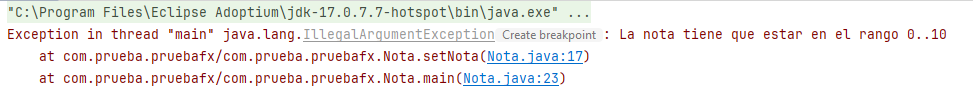
Lo correcto es controlar la excepción, de esta forma:
- leer del usuario la nota dentro de un bucle
- controlar mediante excepciones el valor correcto como método de salida del bucle
public static void main(String[] args) {
Scanner sc = new Scanner(System.in);
Nota programacion = new Nota("Programación");
boolean esCorrecto = false;
int valorNota;
do {//mientras la nota no sea correcta salta la excepción
try {
System.out.println("Introduzca una nota entre 0..10");
valorNota = sc.nextInt();
//si no es correcta, salta la excepción
programacion.setNota(valorNota);
//si no salta la excepción salimos del bucle
esCorrecto = true;
} catch (IllegalArgumentException e) {
esCorrecto = false;
}
} while (!esCorrecto);
}
throws: Incluir en la firma del método la excepción¶
Debemos indicar en la firma del método que puede lanzar una excepción. Esto se indica con la palabra clave throws
public void setNota(int nota) throws IllegalArgumentException {
//si la nota no cumple las especificaciones, lanzamos una excepción
if(nota<0 || nota >10)
throw new IllegalArgumentException("La nota tiene que estar en el rango 0..10");
this.nota = nota;
}
throws?
unchecked exception: No, no es obligatorio si es una excepción no comprobada . Pero es conveniente para que se vea en la firma y sepa que puede lanzar una excepción
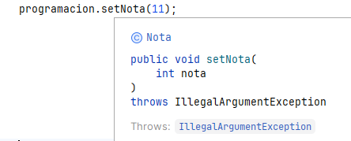
checked exceptions: Sí, en el caso de excepciones comprobadas. Para excepciones comoIOException, es obligatorio declararlas conthrows
Excepciones personalizadas¶
Las excepciones de Java cubren casi todas las excepciones generales que están obligadas a ocurrir en la programación.
Java nos permite complementar estas excepciones estándar con las nuestras que mejoren la lógica y comprensión de la aplicación, permitiendo un control del programa mediante excepciones.
Ejemplo:
- Queremos implementar una clase Clientes en la que tenemos un array en el que no queremos repeticiones. Podemos proteger nuestra clase creando un nuevo tipo de excepción en el que salte dicha excepción si se intenta insertar un cliente que ya existe.
- Lanzar una excepción cuando no hay stock suficiente cuando se realiza un pedido
- En una cuenta bancaria salte una excepción si el saldo es insuficiente.
Crear Excepciones¶
Podemos crearla de dos tipo:
- unchecked: La excepción no te obligará a controlarla con try-catch. Crearemos una excepción que herede de
RuntimeException - checked: La excepción se tiene que controlar con try-catch. Crearemos una excepción que herede de
Exception
Ejemplo¶
Vamos a crear excepciones checked para una clase Clientes que:
- contiene un array con los nombres de clientes
- si se intenta insertar un cliente que ya existe, lance una excepción
- si no nos queda espacio en el array, lance una excepción
Creamos la excepción para controlar que el usuario no existe
public class ClienteYaExisteException extends Exception {
public ClienteYaExisteException(String mensaje) {
super(mensaje);
}
@Override
public String toString() {
return "ClienteYaExisteException: " + getMessage();
}
}
Creamos la excepción que controla si no queda espacio en el array
public class NoHayEspacioException extends Exception {
public NoHayEspacioException(String mensaje) {
super(mensaje);
}
@Override
public String toString() {
return "NoHayEspacioException: " + getMessage();
}
}
public class Clientes {
private String[] clientes;
//lleva el total de clientes actual
private int contador = 0;
public Clientes(int tamaño) {
clientes = new String[tamaño];
}
//indicamos en la firma que hay que tratar la excepciones
public void agregarCliente(String nombre)
throws ClienteYaExisteException, NoHayEspacioException{
// comprobar espacio
if (contador >= clientes.length) {
//lanza excepción
throw new NoHayEspacioException("No queda espacio para añadir: " + nombre);
}
// comprobar si ya existe
for (int i = 0; i < contador; i++) {
if (clientes[i].equalsIgnoreCase(nombre)) {
//lanza excepción
throw new ClienteYaExisteException("El cliente '" + nombre + "' ya existe.");
}
}
// agregar cliente
clientes[contador] = nombre;
contador++;
}
public void mostrarClientes() {
System.out.println("Lista de clientes:");
for (int i = 0; i < contador; i++) {
System.out.println("- " + clientes[i]);
}
}
}
La clase que utilice Clientes está obligada mediante try-catch a manejar las excepciones que hemos creado
public class Main {
public static void main(String[] args) {
Clientes lista = new Clientes(2);
try {
lista.agregarCliente("Ana");
lista.agregarCliente("Luis");
lista.agregarCliente("Juan"); // No hay espacio → lanza excepción
}
catch (ClienteYaExisteException e) {
System.out.println(e); // llama a toString()
}
catch (NoHayEspacioException e){
System.out.println(e);
}
lista.mostrarClientes();//Ana-Luis
}
}
Salida
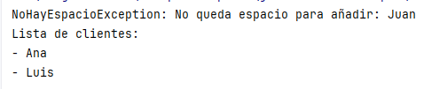